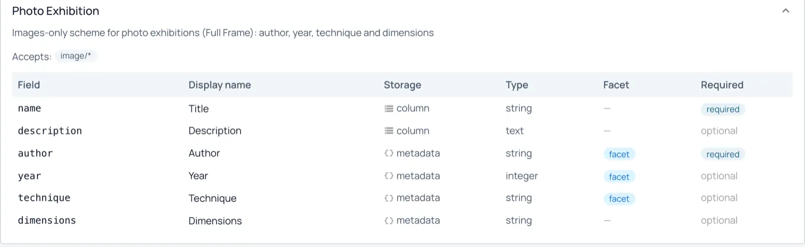
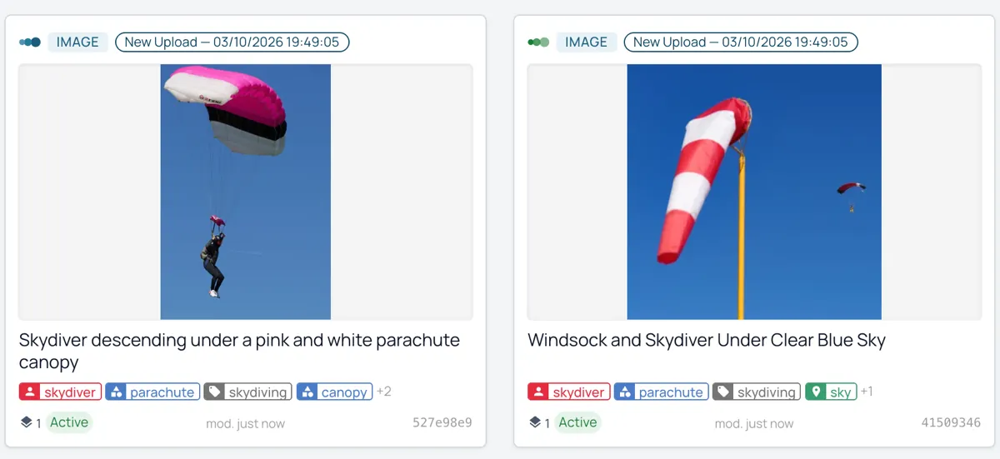
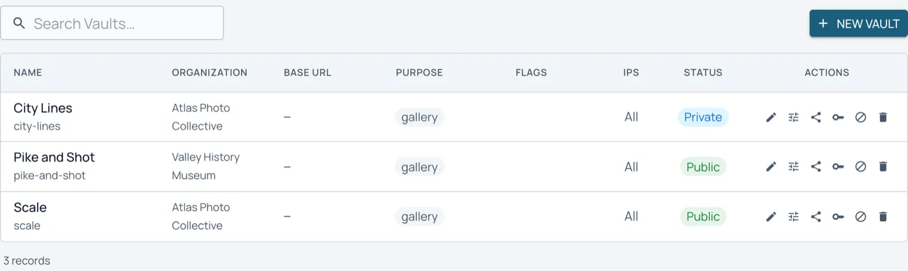
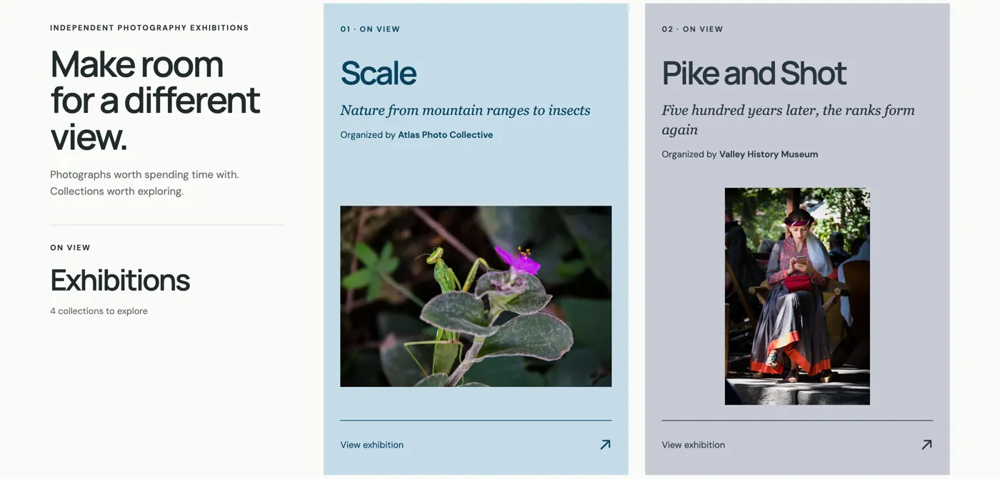
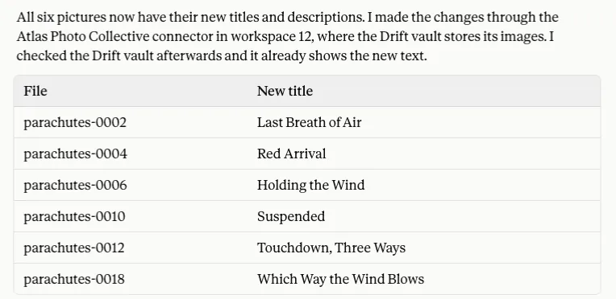
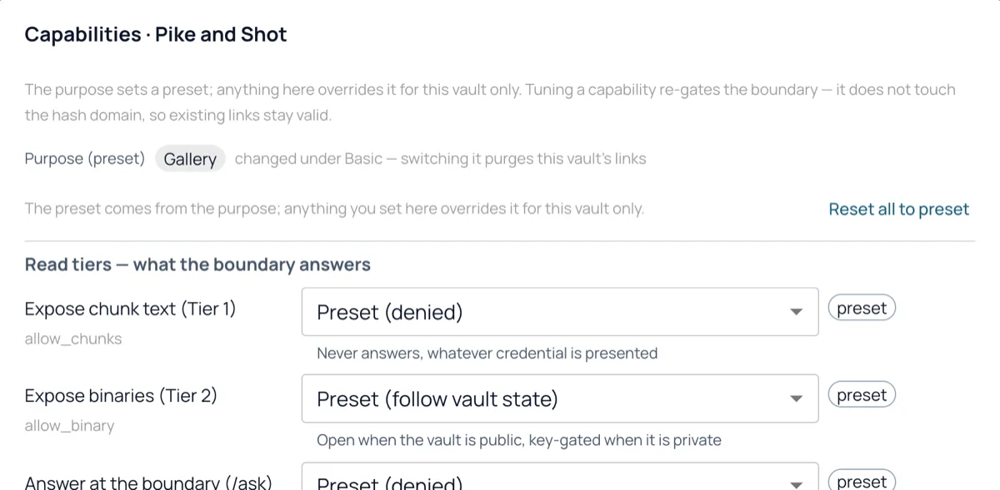
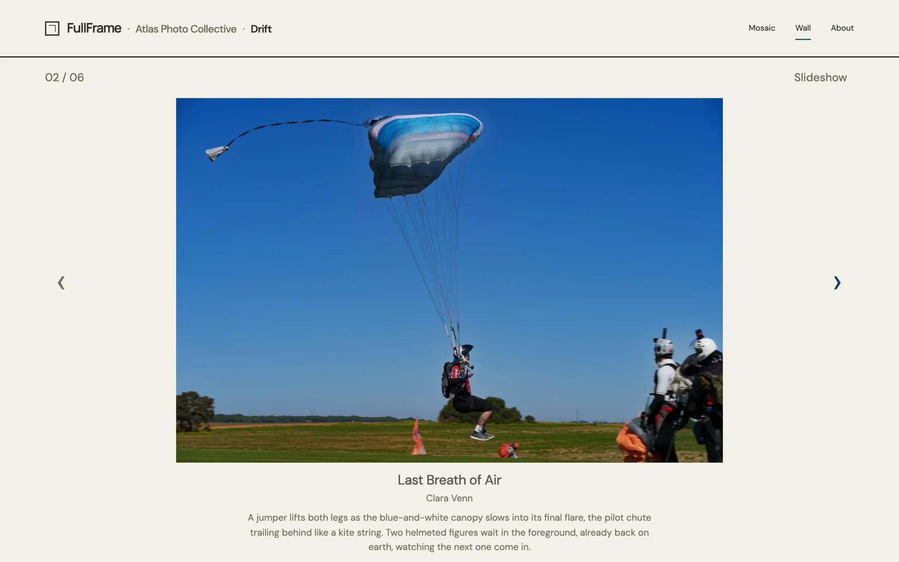

01Organize.
Keep an asset, its supporting files and representations together as a resource. Collection schemas define its metadata, file roles and indexing rules.
Schema-driven collectionsDigital assets · Open source · early access
TYDAL is an open-source library for images, documents, datasets and code. You define the fields that describe each kind of item; its AI proposes titles, descriptions and tags, and you approve them. Then you share chosen selections, called Vaults, with people, applications and AI assistants such as Claude.
Built first for photography collections, museums and archives. Learning resources next.
TYDAL runs on your own server with Docker. An AI assistant can also connect to a TYDAL you already use.

What TYDAL does
Each collection has its own set of fields (a schema), which shapes its forms, its checks and its search. Find content by meaning, not only by exact words, connect related items and reuse them in different places.

01Keep an asset, its supporting files and representations together as a resource. Collection schemas define its metadata, file roles and indexing rules.
Schema-driven collections
02AI can suggest descriptions, tags and classifications from your content. Review those suggestions before applying them, or use configurable approval rules.
AI enrichment with review
03Publish selected resources through Vaults with their own context and access rules. Reuse the same source across galleries, applications and AI connections.
One source, multiple contextsBuilt around TYDAL
Your content stays in TYDAL. Each application or AI assistant works with the selection (Vault) shared with it, under that Vault’s own access rules.
FullFrame is an independent open-source application that lives outside TYDAL and is an example of how to add features to it: it turns photographs in a Vault into exhibitions, with curator selection and an optional jury. Your own client can do the same through the Vault interfaces.
Photography · Museums · Archives
Connect external AI tools through MCP to explore the resources exposed by a Vault, including their content, metadata and relationships.
Agents & knowledge workflows
Build an experience around your content using the API and SDK—from a resource library to a learning application.
API · TypeScript SDK · Vaults
See it work
Connected to TYDAL through MCP, Claude looks at each photograph in Drift, proposes titles and descriptions, and asks before it writes anything back.

For developers
Manage resources and collections through the repository API. Build applications against Vault interfaces, or connect AI agents through MCP. Each Vault controls the content and capabilities it exposes.
Explore developer docs# Use your instance’s Vault URL and key
curl "$TYDAL_VAULT_URL/meta" \
-H "X-Vault-Key: $TYDAL_VAULT_KEY"Built in the open
TYDAL is built for developers and early adopters who want to understand, adapt and extend the tools they use.
TYDAL is available under the Apache License 2.0. Run your own instance, inspect the code and contribute to its development.
Add your own features as a client. FullFrame is an example under Apache-2.0: explore a working external application built on TYDAL's Vault interfaces.